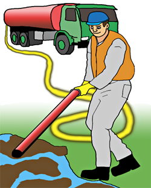

FASE 2 - OPPSAMLING
Når alt løst materiale er fjernet, samler en opp all fri olje. Er det fare for at oljen kan renne ut i sjøen igjen, sikres området med oljelenser og/eller oljeabsorberende lenser.
Dette samles opp i sekker, tanker eller annet passende (tett) lagringsmedie, og leveres til nærmeste mellomlagringsdepot.
